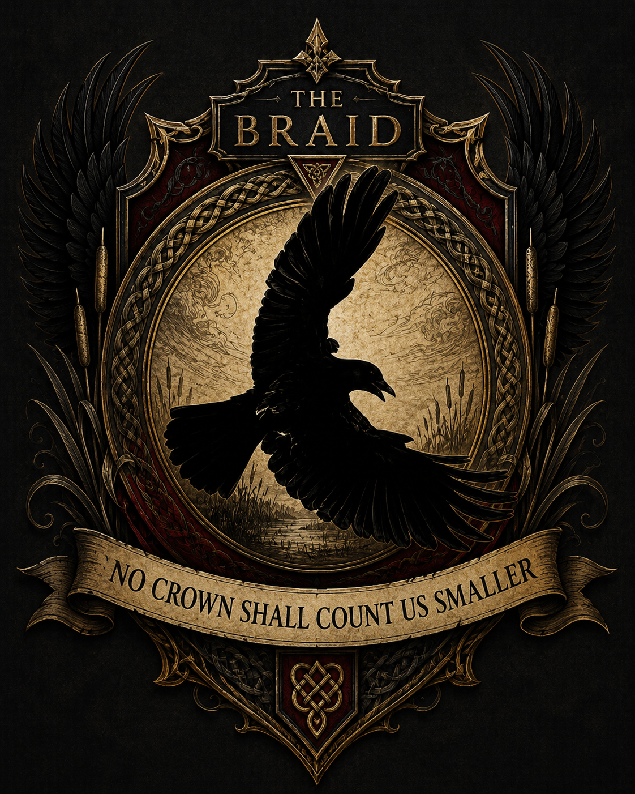
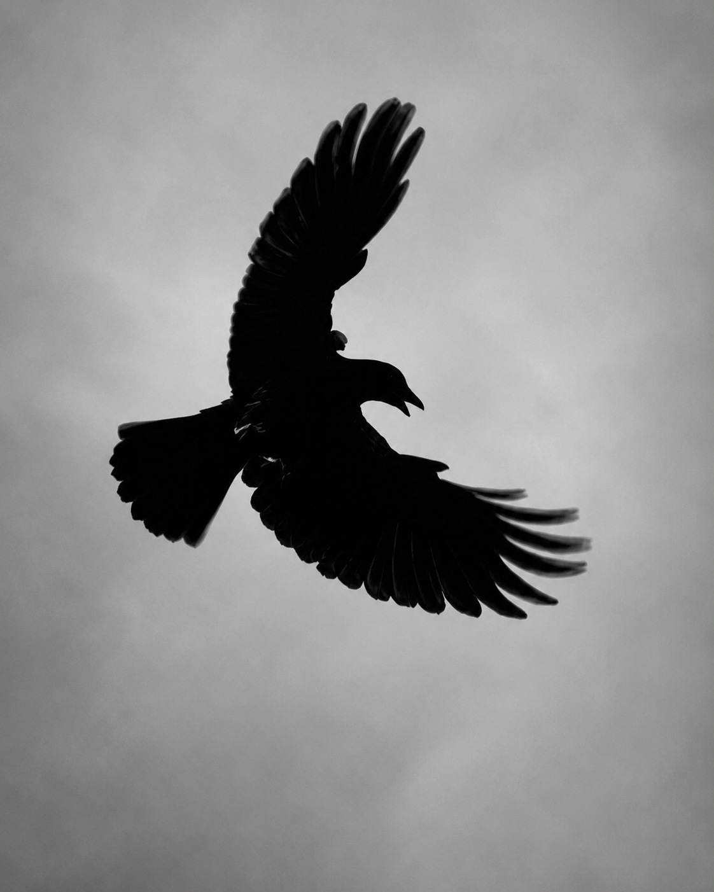

The Archive Opens
This archive gathers the visual language of The Saga of Black Wings: raven-shadow, old gold, dark flowers, beast-witnesses, oath banners, family signs, marsh-law, refusal, love, grief, humour and the living symbols of the saga.
“A symbol is a door. A crest is a promise nailed where forgetting cannot reach.”
The Braid Crest
A major emblem for The Braid, carrying the raven in flight, old knotwork, dark wings, marsh-reeds, antique gold and the oath-motto:
No Crown Shall Count Us Smaller

This crest belongs to the next great movement of the saga: the Braid named not only as people, but as banner, oath, record and living law.
Raven in Flight
A black-winged flight plate drawn from the living world: stark, simple, watchful and perfect for the saga’s raven-language.

“The wing does not ask the road for permission.”
Beast and Bird Witnesses
The animals of Black Wings are never decoration. They watch, warn, object, hunt, comfort, carry messages and often know the truth before the humans admit it.

More Crest Plates Coming
More images will be added here carefully, one at a time, using their exact file names so the archive stays clean and nothing breaks.
Planned archive additions include the full Black Wings animal crest, the Maisie and Bella sketch, and the Witness Isle banner.